BookShop
Click the Book Title to Add To Cart
- Classic - To Kill A Mocking Bird 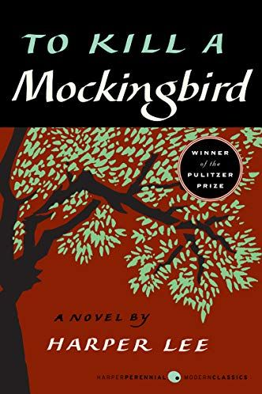
- Classic - Little WOmen 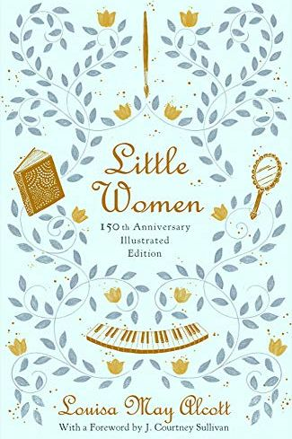
- Classic - Beloved
- Historical Fiction - The Help 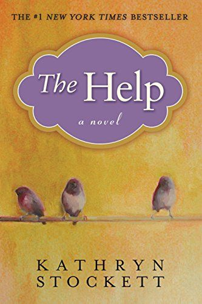
- Historical Fiction - One Hundred Years of Solitude
- Historical Fiction - Vintage Memoirs of Geisha
- Comic Book or Graphic Novel - The Boy, The Fox and the Horse 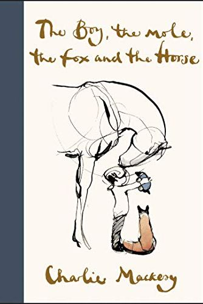
- Comic Book or Graphic Novel - Watchmen 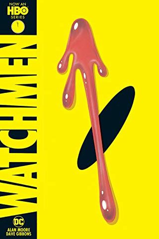
- Comic Book or Graphic Novel - Walking Dead: Compendium One
- Detective and Mystery - The Night Fire
- Detective and Mystery - The Adventure of Sherlocke HOme
- Detective and Mystery - And There Was NOne 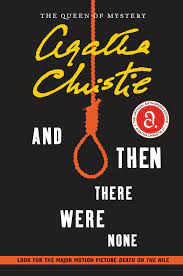
- Horror - Carrie 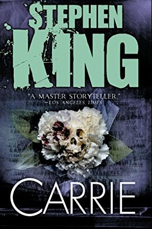
- Horror - Haunting of Hill House
- HOrror - Bird Box
- Romance - Brazen and The Beast
- Romance - ROyal Holiday 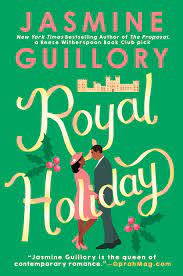
- Romance - The Savior 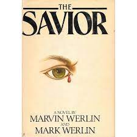
- Adventure - White Fang 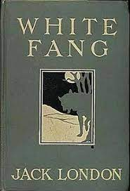
- Adventure - Lands of Lost Borders 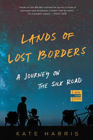
- Adventure - The Lost Pianos of Siberia
- Health and Fitness - Lies My Doctor Told Me
- Health and Fitness - Unlock The Power of Sleep and Dream
- Health and Fitness - Why We Get Fat 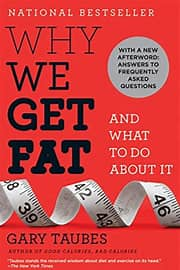
- Literary Fiction - Where the Crawdads Sing 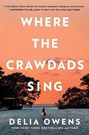
- Literary Fiction - Olive Again 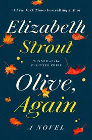
- Literary Fiction - The Dutch House 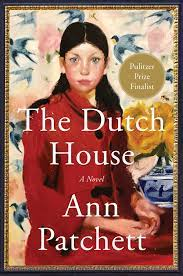
- Biography - The Wives of Henry
- Biography - A Biography of Frida Kahlo by Hayden Herrera
- Biography - MRS. ROBINSON’S DISGRACE: THE PRIVATE DIARY OF A VICTORIAN LADY BY KATE SUMMERSCALE 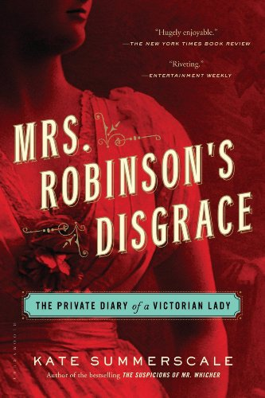
- Cooking - Mediterranean Instant Pot Cookbook
- Cooking - Litle Paris Kitchen 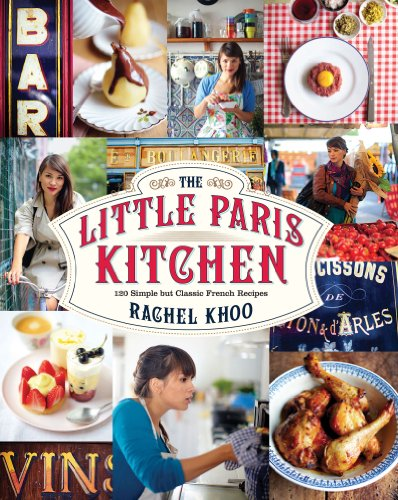
- Cooking - Air Fryer Cookbook
- Science Fiction - I, ROBOT BY ISAAC ASIMOV
- Science Fiction - CHILDHOOD’S END BY ARTHUR C. CLARKE
- Science Fiction - Red Mars 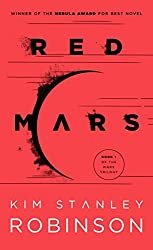
- Nursery - Oh Oscar 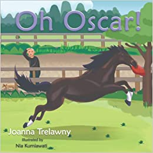
- Nursery - Fruit and Vegetables 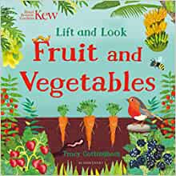
- Nursery - Kew: Lift and Look Trees 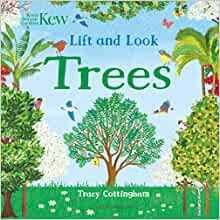
- Elementary - Wonder
- Elementary - Homework Strike
- Detective and Mystery -
- Art and Photography - Cruise Night
- Art and Photography - The Day May Break
- Art and Photography - Fine Art Street Photography
- Music - The Story Teller: Tales of Life and Music
- Music - How to Write One Song
- Music - This is Your Brain ON Music 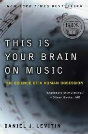
- History - 1776
- History - A People's History of united States
- History - Sapiens: A Brief History of Humankind 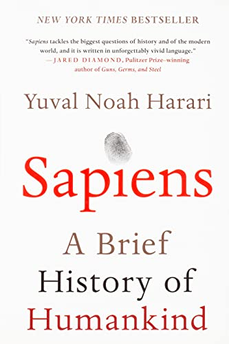
- Travel - Dark Star Safari: Overland from Cairo to Capetown
- Comic Book or Graphic Novel - The Boy, The Fox and the Horse 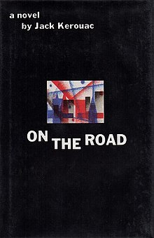
- Travel - Vagabonding: An Uncommon Guide to the Art of Long-Term World Travel
”

”
”
”
”
”
”
"Ten little boys went out to dine; One choked his little self and then there were nine. Nine little boys sat up very late; One overslept himself and then there were eight. Eight little boys traveling in Devon; One said he'd stay there then there were seven. Seven little boys chopping up sticks; One chopped himself in half and then there were six. Six little boys playing with a hive; A bumblebee stung one and then there were five. Five little boys going in for law; One got in Chancery and then there were four. Four little boys going out to sea; A red herring swallowed one and then there were three. Three little boys walking in the zoo; A big bear hugged one and then there were two. Two little boys sitting in the sun; One got frizzled up and then there was one. One little boy left all alone; He went out and hanged himself and then there were none."
”
”
”
”
”
”
White Fang is a novel by American author Jack London (1876–1916) — and the name of the book's eponymous character, a wild wolfdog. First serialized in Outing magazine
A Journey on the Silk Road. This book was well-written and writes about the kind of emotions one faces when they’re in many in-betweens in their lives, whether it is a career, or a dream to explore the unknown or to continue their studies.
his book is an interesting mixture of travel writing, Russian history, and music as the author travels across Siberia ostensibly to locate different pianos, once highly fashionable and popular in Russia - that have now disappeared
”

Walker answers important questions about sleep: how do caffeine and alcohol affect sleep? What really happens during REM sleep? Why do our sleep patterns change across a lifetime? How do common sleep aids affect us and can they do long-term damage? Charting cutting-edge scientific breakthroughs, and synthesizing decades of research and clinical practice, Walker explains how we can harness sleep to improve learning, mood, and energy levels; regulate hormones; prevent cancer, Alzheimer’s, and diabetes; slow the effects of aging; increase longevity; enhance the education and lifespan of our children, and boost the efficiency, success, and productivity of our businesses. Clear-eyed, fascinating, and accessible, Why We Sleep is a crucial and illuminating book
Taubes reveals the bad nutritional science of the last century—none more damaging or misguided than the “calories-in, calories-out” model of why we get fat—and the good science that has been ignored. He also answers the most persistent questions: Why are some people thin and others fat? What roles do exercise and genetics play in our weight? What foods should we eat, and what foods should we avoid? Persuasive, straightforward, and practical, Why We Get Fat is an essential guide to nutrition and weight management.
Drawn to two young men from town, who are each intrigued by her wild beauty, Kya opens herself to a new and startling world—until the unthinkable happens.
Olive, Again is a novel that is boldly observant, honest and searches for apperception. The story of the indomitable Olive Kitteridge follows on two years after. The iconic Olive struggles to understand not only herself and her own life but also the lives of those around her in the town of Crosby, Maine. Whether with a teenager coming to terms with the loss of her father, a young woman about to give birth during a hilariously inopportune moment, a nurse who confesses a secret high school crush
At the end of the Second World War, Cyril Conroy combines luck and a single canny investment to begin an enormous real estate empire, propelling his family from poverty to enormous wealth. His first order of business is to buy the Dutch House, a lavish estate in the suburbs outside of Philadelphia. Meant as a surprise for his wife
“In a sweeping narrative, Fraser traces the cultural, familial and political roots of each of Henry’s queens, pushes aside the stereotypes that have long defined them, and illuminates the complex character of each.”
“This engrossing biography of Mexican painter Frida Kahlo reveals a woman of extreme magnetism and originality, an artist whose sensual vibrancy came straight from her own experiences: her childhood near Mexico City during the Mexican Revolution; a devastating accident at age eighteen that left her crippled and unable to bear children.”
Kate Summerscale brilliantly recreates the Victorian world, chronicling in exquisite and compelling detail the life of Isabella Robinson, wherein the longings of a frustrated wife collided with a society clinging to rigid ideas about sanity, the boundaries of privacy, the institution of marriage, and female sexuality.
Want a quick and easy way to make good-for-you recipes?Well, now you can easily combine the healthful eating guidelines of the Mediterranean diet with the time-saving convenience of a multi-cooker.In the current moment, the Mediterranean diet and the Instant Pot dominate in conversations about food. Unlike some other wellness “trends,” these two stand the test of time. Pair them up for a match made in heaven. With an Instant Pot and the right ingredients, healthy and inventive dinners have never been easier.
Rachel Khoo serves up a modern twist on classic French cooking. Rachel Khoo was determined to get to grips with French cooking, so to learn more she moved to Paris, not speaking a word of French, and enrolled at Le Cordon Bleu, the world-famous cookery school. Six years later, she still lives and works in Paris, cooking up a selection of classic French dishes from all over the country and giving them a fresh makeover with her own modern twists. Cooking - Air Fryer Cookbook - Air Fryers help you cook healthy and delicious meals in no time! You don't need to be an expert in the kitchen to cook delightful meals for your loved ones! You just have to own an air fryer and "Air Fryer Cookbook: 550 Air Fryer Recipes for Delicious and Healthy Meals"! With this cookbook, you will soon make the best dishes ever and you will impress everyone around you with your home cooked meals! To make sure you are not getting bored cooking we collected 550 Air Fryer Recipes
”
This amazing book has a bunch of stories to tell you that all relate to unique and exciting robots. We all know that robots have the potential to go about their own way and against their programming, but they also have a lot of potential that involves serving us and doing everything for us.
Here is a book by a familiar face again as Arthur appears once more to show you one of his best science fiction books. This time, he talks about a story that involves another alien race that will be threatening human civilization and its very existence
You have another Mars story in this book that will be taking you on yet another amazing colonization journey that the humans will be trying. The year is 2026 and 100 brave people have trained hard and applied to be the first colonists on Mars, let the journey begin.
Chaos follows the big bay horse wherever he goes- but he may have gone too far this time! When his best friend loses his playtime in the field because of Oscar's latest trick, he gives Oscar the cold shoulder. Luckily even the yard cat has a soft spot for him and soon everyone can see the funny side.
Lift the flaps to see what is inside the greenhouse, behind the orchard gate and growing underground. From leafy green vegetables, to colourful tropical fruit and jewel-like berries, there is lots to discover on every page. With vibrant illustrations and simple, accessible text, this is the perfect introduction to fruit and vegetables for little ones.
Who lives in the tree and what wonderful fruit can you pick? What do trees look like as the year goes by? Lift the flaps to discover red autumn trees, leafless wintry trees and even lots of things that can fall from trees! With bright illustrations and simple, accessible and interactive text, this is the perfect first introduction to trees for preschoolers.
”
”
The electric colors of the tricked-out cars in Kristin Bedford’s Cruise Night are a feast for the eyes—and that’s before the hydraulics start bouncing. Her five-year photo project covering the Los Angeles Mexican-American lowrider community documents all aspects of the lifestyle: the people, the meticulously customized cars, and naturally, the proud owners showing off of their rides. Bedford emphasizes the tradition, self-expression and artistic aspects of lowriding, bringing a female point of view to car culture. The book is dotted with quotes from lowriders sharing what the lifestyle means to them, how they got started and they’re little gems. Timothy Guerrero, a lowrider since 1969, likened his discovery of the lowrider culture to the moment in The Wizard of Oz when Dorothy opens her front door in Oz, and everything changes from black and white to color. There are tens of thousands of lowriders in Los Angeles—and Bedford doesn’t forget to feature the women. Mary Saucedo, lowrider since 1969 recalls her first ride in the book: “I saved and saved, and when I was 16 years old, I bought my first lowrider for $175, a 1962 Impala Super Sport… I did everything myself.”
Photographed in Zimbabwe and Kenya in late 2020, The Day May Break is the first part of a global series by Brandt. The people Brandt photographs have all been badly affected by climate change—some displaced by cyclones that destroyed their homes, others such as farmers impoverished by years-long droughts. The animals, all from five sanctuaries and conservancies, are almost all long-term rescues, victims of everything from the poaching of their parents to habitat destruction and poisoning. These animals can never be released back into the wild. As a result, they are habituated, and so it was safe for human strangers to be close to them, photographed in the same frame at the same time. Looking at these photos, one becomes acutely aware of how a warming planet and a changing climate has impacted these lives, both human and animal—and how much has been lost to them and all of us, already. However, these people and animals are the survivors, and there lies possibility and hope. — Q.N.
Fine Art Street Photography shows how to turn the urban environment into striking images. From how to use the light to what to look for in a scene, Rupert Vandervell reveals the key elements of stunning street photography.
Having entertained the idea for years, and even offered a few questionable opportunities ("It's a piece of cake! Just do 4 hours of interviews, find someone else to write it, put your face on the cover, and voila!") I have decided to write these stories just as I have always done, in my own hand. The joy that I have felt from chronicling these tales is not unlike listening back to a song that I've recorded and can't wait to share with the world, or reading a primitive journal entry from a stained notebook, or even hearing my voice bounce between the Kiss posters on my wall as a child. This certainly doesn't mean that I'm quitting my day job, but it does give me a place to shed a little light on what it's like to be a kid from Springfield, Virginia, walking through life while living out the crazy dreams I had as young musician. From hitting the road with Scream at 18 years old, to my time in Nirvana and the Foo Fighters, jamming with Iggy Pop or playing at the Academy Awards or dancing with AC/DC and the Preservation Hall Jazz Band, drumming for Tom Petty or meeting Sir Paul McCartney at Royal Albert Hall, bedtime stories with Joan Jett or a chance meeting with Little Richard, to flying halfway around the world for one epic night with my daughters…the list goes on. I look forward to focusing the lens through which I see these memories a little sharper for you with much excitement.
There are few creative acts more mysterious and magical than writing a song. But what if the goal wasn’t so mysterious and was actually achievable for anyone who wants to experience more magic and creativity in their life? That’s something that anyone will be inspired to do after reading Jeff Tweedy’s How to Write One Song.
Taking on prominent thinkers who argue that music is nothing more than an evolutionary accident, Levitin poses that music is fundamental to our species, perhaps even more so than language. Drawing on the latest research and on musical examples ranging from Mozart to Duke Ellington to Van Halen, he reveals: • How composers produce some of the most pleasurable effects of listening to music by exploiting the way our brains make sense of the world • Why we are so emotionally attached to the music we listened to as teenagers, whether it was Fleetwood Mac, U2, or Dr. Dre • That practice, rather than talent, is the driving force behind musical expertise • How those insidious little jingles (called earworms) get stuck in our head
America’s beloved and distinguished historian presents, in a book of breathtaking excitement, drama, and narrative force, the stirring story of the year of our nation’s birth, 1776, interweaving, on both sides of the Atlantic, the actions and decisions that led Great Britain to undertake a war against her rebellious colonial subjects and that placed America’s survival in the hands of George Washington. In this masterful book, David McCullough tells the intensely human story of those who marched with General George Washington in the year of the Declaration of Independence—when the whole American cause was riding on their success, without which all hope for independence would have been dashed and the noble ideals of the Declaration would have amounted to little more than words on paper.

A People's History of the United States is a 1980 nonfiction book by American historian and political scientist Howard Zinn. In the book, Zinn presented what he considered to be a different side of history from the more traditional "fundamental nationalist glorification of country".[1] Zinn portrays a side of American history that can largely be seen as the exploitation and manipulation of the majority by rigged systems that hugely favor a small aggregate of elite rulers from across the orthodox political parties.
From a renowned historian comes a groundbreaking narrative of humanity’s creation and evolution—a #1 international bestseller—that explores the ways in which biology and history have defined us and enhanced our understanding of what it means to be “human.” One hundred thousand years ago, at least six different species of humans inhabited Earth. Yet today there is only one—homo sapiens. What happened to the others? And what may happen to us?
A rattletrap bus, dugout canoe, cattle truck, armed convoy, ferry, and train. In the course of his epic and enlightening journey, wittily observant and endearingly irascible Paul Theroux endures danger, delay, and dismaying circumstances. Gauging the state of affairs, he talks to Africans, aid workers, missionaries, and tourists. What results is an insightful meditation on the history, politics, and beauty of Africa and its people.
1957 novel by American writer Jack Kerouac, based on the travels of Kerouac and his friends across the United States. It is considered a defining work of the postwar Beat and Counterculture generations, with its protagonists living life against a backdrop of jazz, poetry, and drug use. The novel is a roman à clef, with many key figures of the Beat movement, such as William S. Burroughs (Old Bull Lee), Allen Ginsberg (Carlo Marx), and Neal Cassady (Dean Moriarty) represented by characters in the book, including Kerouac himself as the narrator Sal Paradise. The idea for On the Road, Kerouac's second novel, was formed during the late 1940s in a series of notebooks, and then typed out on a continuous reel of paper during three weeks in April 1951. It was published by Viking Press in 1957. The New York Times hailed the book's appearance as "the most beautifully executed, the clearest and the most important utterance yet made by the generation Kerouac himself named years ago as 'beat,' and whose principal avatar he is."[1] In 1998, the Modern Library ranked On the Road 55th on its list of the 100 best English-language novels of the 20th century. The novel was chosen by Time magazine as one of the 100 best English-language novels from 1923 to 2005.
There’s nothing like vagabonding: taking time off from your normal life—from six weeks to four months to two years—to discover and experience the world on your own terms. In this one-of-a-kind handbook, veteran travel writer Rolf Potts explains how anyone armed with an independent spirit can achieve the dream of extended overseas travel. Now completely revised and updated, Vagabonding is an accessible and inspiring guide to • financing your travel time • determining your destination • adjusting to life on the road • working and volunteering overseas • handling travel adversity • re-assimilating back into ordinary life